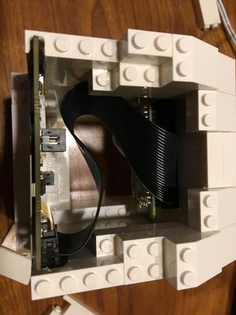
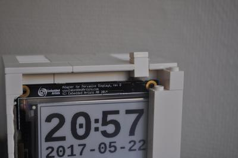

My LEGO Macintosh Classic with Raspberry Pi and e-paper display
Beginning of April I read an inspiring blog post from Jannis Hermanns about a LEGO Machintosh Classic with e-paper display. It was a really nice and cool article.
I've been playing with some Raspberry Pis before but only with software. I have been willing to fiddle with hardware for some time. This was the perfect opportunity!
LEGO Digital Designer
I decided to try to make my own LEGO Macintosh based on Jannis work. His blog post is quite detailed with even a list of links with all the required components.
But I quickly realized there were no LEGO building instructions... I thus created my own using LEGO Digital Designer, which was fun. Looking at the pictures on Jannis flickr album helped a lot. But having an exact idea of the screen size wasn't easy on the computer. So I also built a small prototype of the front part to get a better idea. For that I had to wait for my e-paper display.
One modification I wanted to do was to use 1U width lego on the side of the display to require less drilling. I also wanted to check if it was possible to use the button located on top of the display.
My .lxf file is on github.

E-paper display
When I was about to order the 2.7 inch e-paper display from Embedded Artists, I noticed that Embedded Artists was located in Malmö, where I live :-).
I e-mailed them and I was granted to pick up my order at their office! A big thanks to them!
Raspbery Pi Zero W
The Raspberry Pi Zero W comes with Wifi which is really nice. It does not come with the soldered GPIO header. I was starting to look at existing soldering iron when I discovered this GPIO Hammer Header:

No soldering required! I used the installation jig and it was really easy to install. There is a nice video that explains how to proceed:
Connecting the display to the Pi
Based on Jannis article I initially thought it wasn't possible to use a ribbon cable (due to space), so I ordered some Jumper Wires. I connected the display to the Pi using the serial expansion connector as described in his blog post. It worked. With the demo from embeddedartists, I managed to display a nice cat picture :-)


I then realized that the serial expansion connector didn't give access to the button on top of the display. That button could allow some interactions, like changing mode, which would be nice. According to my prototype with 1U width lego on the side, using a ribbon cable shouldn't actually be an issue. So I ordered a Downgrade GPIO Ribbon Cable for Raspberry Pi.
It required a little drilling on the right side for the cable to fit. But not that much. More is needed on the left side to center the screen. Carried away by my enthusiasm, I actually cut a bit too much on the left side (using the dremel was fun :-).


Everything fitted nicely in the lego case:
Button on top
With the ribbon cable, the button on top of the display is connected to pin 15 on the Raspberry Pi (BCM GPIO22). The ImageDemoButton.py part of the demo shows an example how to use the button to change the image displayed.
Using my small prototype, I planned a small hole on top of the case. I thought I'd have to fill the brick with something hard to press the button. The 1x1 brick ended fitting perfectly. As shown on the picture below, the side is exactly on top of the button. I added a little piece of foam inside the brick to keep it straight.
Of course I move away from the Macintosh Classic design here... but practicality beats purity :-)
Pi configuration
Jannis article made me discover resin.io, which is a really interesting project. I did a few tests on a Raspberry Pi 3 and it was a nice experience. But when I received my Pi Zero W, it wasn't supported by resinOS yet... This isn't the case anymore! Version 2.0.3 added support for the wifi chip.
Anyway, as Jannis already wrote about resinOS, I'll describe my tests with Raspbian. To flash the SD card, I recommend Etcher which is an open source project by the same resin.io. I'm more a command line guy and I have used dd many times. But I was pleasantly surprised. It's easy to install and use.
- Download and install Etcher
- Download Raspbian Strecth Lite image
- Flash the SD card using Etcher
- Mount the SD card to configure it:
# Go to the boot partition
# This is an example on OSX (mount point will be different on Linux)
$ cd /Volumes/boot
# To enable ssh, create a file named ssh onto the boot partition
$ touch ssh
# Create the file wpa_supplicant.conf with your wifi settings
# Note that for Raspbian Stretch, you need the first line
# (ctrl_interface...)! This was not the case for Jessie.
$ cat << EOF > wpa_supplicant.conf
ctrl_interface=DIR=/var/run/wpa_supplicant GROUP=netdev
network={
ssid="MyWifiNetwork"
psk="password"
key_mgmt=WPA-PSK
}
EOF
# Uncomment dtparam=spi=on to enable the SPI master driver
$ vi config.txt
# Leave the boot partition
$ cd
- Unmount the SD card and put it in the Raspberry Pi
- Boot the Pi
I wrote a small Ansible playbook to install the E-ink driver and the clock demo:
- name: install required dependencies
apt:
name: "{{item}}"
state: present
update_cache: yes
with_items:
- git
- libfuse-dev
- fonts-liberation
- python-pil
- name: check if the epd-fuse service exists
command: systemctl status epd-fuse.service
check_mode: no
failed_when: False
changed_when: False
register: epd_fuse_service
- name: clone the embeddedartists gratis repository
git:
repo: https://github.com/embeddedartists/gratis.git
dest: /home/pi/gratis
- name: build the EPD driver and install the epd-fuse service
shell: >
COG_VERSION=V2 make rpi-epd_fuse &&
COG_VERSION=V2 make rpi-install
args:
chdir: /home/pi/gratis/PlatformWithOS
when: epd_fuse_service.rc != 0
- name: ensure the epd-fuse service is enabled and started
service:
name: epd-fuse
state: started
enabled: yes
- name: install the epd-clock service
copy:
src: epd-clock.service
dest: /etc/systemd/system/epd-clock.service
owner: root
group: root
mode: 0644
- name: start and enable epd-clock service
systemd:
name: epd-clock.service
daemon_reload: yes
state: started
enabled: yes
To run the playbook, clone the repository https://github.com/beenje/legomac:
$ git clone https://github.com/beenje/legomac.git $ cd legomac $ ansible-playbook -i hosts -k epd-demo.yml
That's it!
Of course don't forget to change the default password on your Pi.
One more thing
There isn't much Python in this article but the Pi is running some Python code. I couldn't resist putting a Talk Python To Me sticker on the back :-) It's really a great podcast and you should definitevely give it a try if you haven't yet. Thanks again to @mkennedy for the stickers!

Below are a few pictures. You can see more on flickr.


Next
I didn't build this LEGO Macintosh to use it as a simple clock :-) I have a few ideas. I'll start with a small web server so that I can receive and display messages. That will be the subject of another blog post!
Comments
Comments powered by Disqus